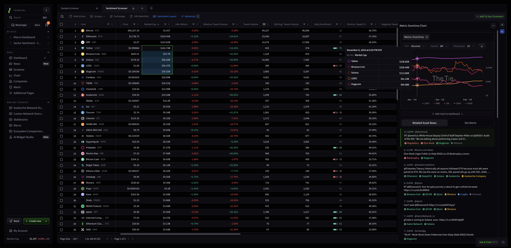

Smaller Screen, Bigger Impact: Bringing The Tie Terminal Experience to Mobile

Mobile App

UX / UI

Lead Designer

The Tie Terminal is a powerful institutional-grade crypto data platform, offering a vast array of market analytics, sentiment data, news aggregation, and sector insights. It’s a comprehensive desktop tool used by traders, analysts, and hedge funds to make informed investment decisions. However, with crypto markets evolving 24/7, users needed a way to stay connected on the go.
The challenge? Translating a feature-rich, data-dense desktop experience into an intuitive, mobile-friendly product. As the product designer leading this initiative, my goal was to create a streamlined yet powerful mobile experience—one that maintains the depth of insights while optimizing for usability, engagement, and clarity on a smaller screen.
Role: Leading the Product Design from Concept to Launch
As the Lead Senior Product Designer, I spearheaded the design of this mobile experience from initial concept to final execution. This was a significant undertaking, requiring me to translate the complexity of our data-heavy desktop product into a mobile-friendly interface that still retained depth, usability, and a great user experience.
- Establishing the UX strategy for the app, ensuring a balance between data density and mobile usability.
- Leading design sprints to develop and iterate on key features, workflows, and visual components.
- Conducting user research and competitive audits to refine our approach based on best practices and user expectations.
- Collaborating closely with engineers and stakeholders to ensure feasibility, maintain design consistency, and address technical constraints.
- Running design reviews and usability testing to validate our decisions and iterate based on real-world feedback.
V1 Designs and Challenges
While the first design iterations were functional, early testing revealed key limitations in how users interacted with data on mobile. We realized that traders and analysts had specific workflows that weren’t fully reflected in the initial designs.
Designing a mobile app for financial markets presents a unique challenge: how do you display complex, real-time financial data in a way that’s intuitive, readable, and engaging on a small screen? Here’s how we tackled these challenges:
One of the biggest challenges in bringing The Tie Terminal to mobile was optimizing data-heavy screens without overwhelming the user. On desktop, traders can view multiple panels simultaneously on large screens. On mobile, we had to reimagine navigation, prioritize key insights, and simplify interactions to ensure a clear and efficient experience.
Strategies to Overcome These Challenges
Prioritizing Essential Data
Instead of cramming every metric from the desktop version, I worked closely with analysts, traders, and stakeholders to define the most impactful insights for mobile users. This included:
- Real-time market movers – Assets experiencing significant price or volume changes.
- Sentiment shifts – Tracking how social media and news sentiment evolves over time.
- Headline aggregation – Curating top news stories that impact the crypto market.
- Historical trends – Simplified yet interactive charts for key assets.
Implementing Progressive Disclosure
To avoid overwhelming users with information, I structured screens using layered content hierarchy:
- Primary screens show high-level metrics (e.g., BTC dominance, total market cap).
- Tapping into assets reveals deeper insights (charts, sentiment, news impact).
- Interactive elements like expandable sections and swipe gestures allow users to engage further when needed.
Creating a Modular UI System
I designed card-based layouts that functioned as independent data modules. This allowed for:
- Easy scanning – Each card contained one core insight, making it digestible.
- Customization – Users could pin assets, reorder sections, and toggle between views.
- Visual engagement – Graphs, heatmaps, and icons provided intuitive data representation.
Optimizing Data Visualization for Mobile
Dense tables and large dashboards don’t translate well to mobile, so I focused on:
- Mini interactive charts for quick trend analysis.
- Heatmaps & color coding for at-a-glance scanning (green for gains, red for losses).
- Smooth scrolling historical graphs for improved touch interaction.
Designing & Prototyping
Visual Engagement & Mobile Usability
Data-heavy screens run the risk of feeling overwhelming or static, so I focused on:
- Visual hierarchy – Used bold typography, iconography, and contrast to highlight the most critical numbers first.
- Microinteractions – Subtle hover, press, and transition animations made interactions feel responsive and dynamic.
- Theming for Accessibility – nsured proper contrast ratios and readability in dark mode (preferred by most financial users).
Key Design Iterations & Reviews
- Refining the Market Movers Screen – Initial designs used dense tables—but they felt cramped. Switched to a grid-based layout with visual indicators (arrows, colors, and percentage change labels). Added quick filters for Top Gainers, Losers, and Most Traded to help users find relevant insights faster.
- Improving Chart Usability – Early prototypes had cluttered graph legends—users struggled to toggle between metrics. Simplified with dynamic tooltips & pinch-to-zoom gestures for an intuitive touch experience.
Final Designs
Navigation
News
Front Page
Screener
Charting
Individual Asset
Testing & Final Adjustments
To ensure a seamless experience, we ran prototype tests with select users, refining based on feedback.
- Adjusted touch targets & tap zones to improve usability.
- Tweaked scroll behavior for smoother interactions on long data feeds.
- Optimized loading states & skeleton screens for performance on different network speeds.
These refinements led to a polished, high-performance crypto intelligence app that makes data insightful, accessible, and engaging—even on mobile.
Final Thoughts: Designing for Scalability & Future Growth
Improving on Initial Designs & Addressing Limitations
Early iterations of our designs revealed key limitations in readability, workflow efficiency, and feature discoverability. Here’s how we improved upon them:
- Enhancing Legibility – Initial data tables were too dense, so we adjusted typography, spacing, and contrast to improve readability on mobile screens.
- Refining Navigation – Users struggled with discoverability of key features, so we introduced a bottom navigation bar and reorganized menus for easier access.
- Optimizing Performance – Some initial UI animations impacted load times, so we streamlined interactions while maintaining a smooth, responsive feel.
This project was a major step forward in making our crypto data tools more accessible and engaging for mobile users. Looking ahead, we plan to:
- AI Integration – Expand AI-driven insights to provide more personalized recommendations.
- Deeper Data Dive – Introduce deeper portfolio tracking features for active traders.
- Optimizing UI – Continue refining the UI based on ongoing user feedback and data analytics.
Leading this project from concept to completion was an exciting challenge, and I’m proud of how we transformed a complex data-heavy platform into a sleek, user-friendly mobile experience.
The final product delivered a powerful yet intuitive mobile experience, enabling users to: Monitor real-time market insights effortlessly. Customize dashboards for their specific needs. Engage with AI-driven analytics for deeper market intelligence. Visual & UX Enhancements Strong visual hierarchy – Bold typography, contrast, and spacing improved readability. Microinteractions – Subtle animations made interactions feel responsive and dynamic. Theming for Accessibility – Optimized dark mode for better contrast and readability. Outcome & Learnings The mobile experience successfully extended The Tie Terminal’s capabilities beyond desktop, providing traders and analysts with a seamless way to stay informed on the go. This project reinforced the importance of: Understanding user workflows rather than just porting desktop features. Testing and iterating multiple design versions to improve usability. Finding the right balance between data complexity and mobile simplicity.